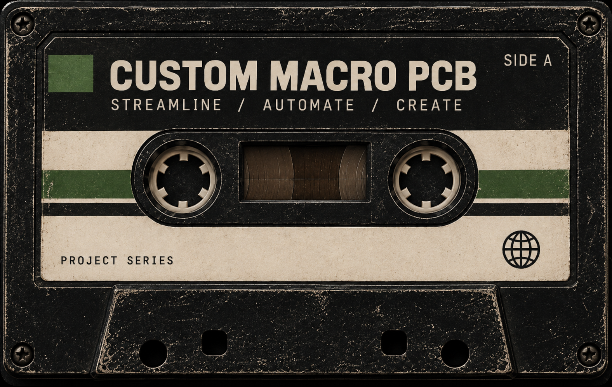
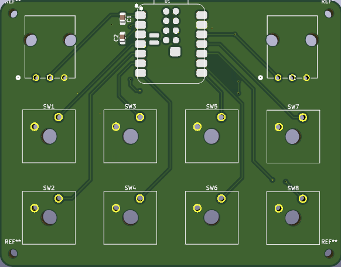
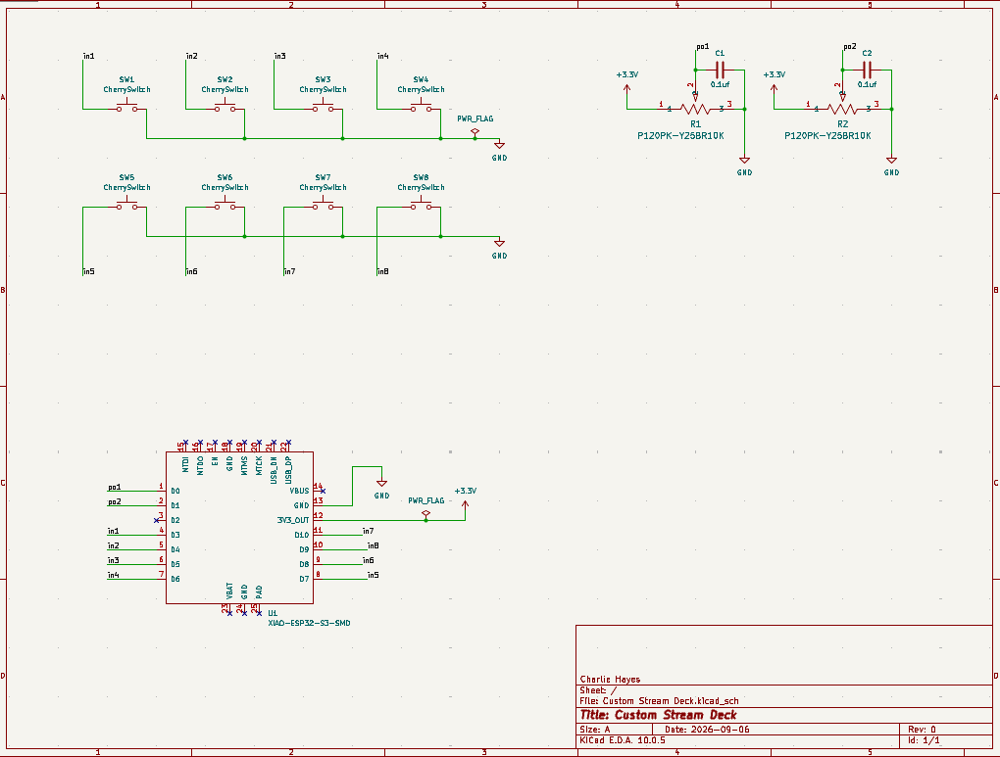
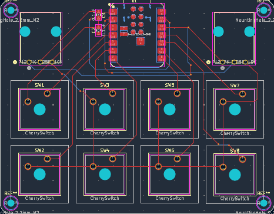
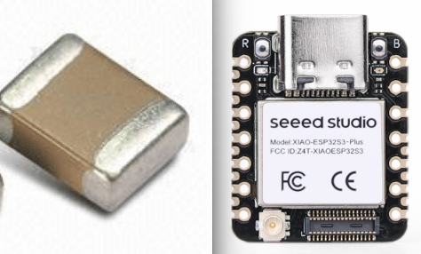

CUSTOM MACRO PCB
PCB • EMBEDDED • ELECTRONICS

PROJECT // OVERVIEW

ABOUT THE PROJECT
First off, let me describe to you what a macro pad is. It is essentially a layout of buttons and knobs that can be assigned to specific purposes on your computer.
Pretty cool right? Well the cheapest you can find them for is about $60. Not the coolest anymore... But I still wanted one and I had some extra things laying around, so why not make one?
I went about this design using KiCad, a free PCB design software. Please take a look below if you wish to see how the design process works.
This project was a way to open the door into the PCB design world for me, and I am very happy with how it turned out. As I wait to see the results of this one, I have already stepped into designing more complex projects.



PROJECT GOALS
The main goal was to design a custom PCB board myself. Fortunalty I just get the added benifit of it actually being usable in my life after.
DESIGN PROCESS
I used KiCad to design this project. Starting with the schematic, I layed out all my connection needs and components. Then I moved to the PCB design where I placed all the components and drew traces. I am glad to have other engineers around me to talk to my projects about because they remined me to do things like add mounting holes and ground my traces after looking over my design, an oversite of mine that I would've had to re-design and re-ship if not for them.
CHALLENGES
The most difficult technical challange I faced during this project way definitely placing traces. You have to run many past eachother with only 2 layers to work with. Although it was the most challenging part of the project, it was also the most rewarding, when I got everything to fit with no erros it felt great!
RESULTS
This project is currently on the way in the mail. I am excited to get the finished product and see how it works!
NEXT STEPS
- Design another PCB.
- Now that I am much more confident in my skill, I wish to challange a more challenging PCB design project.